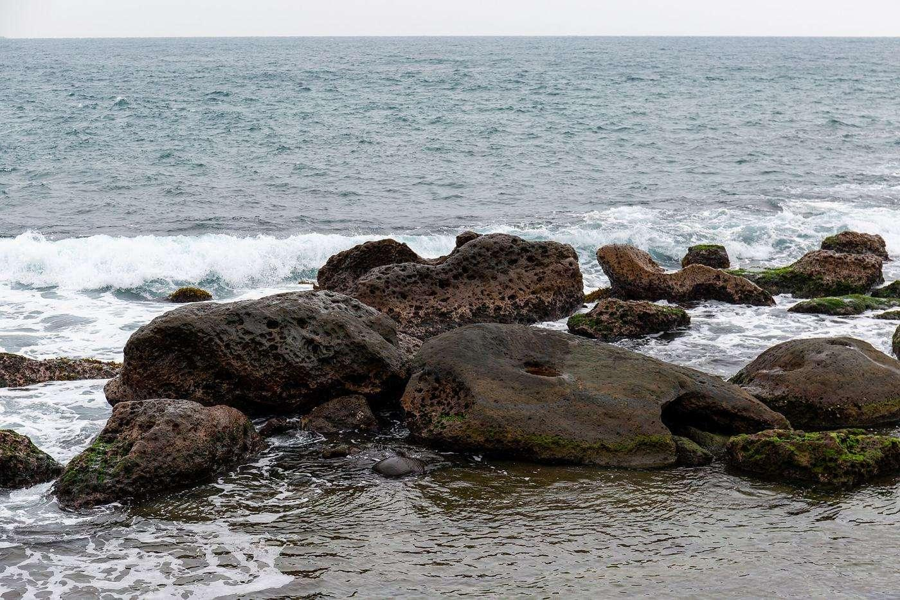

制作側の連想
ビューラーの部位を、配置図にしてみる
ビューラーの部位を図にしたもので、制作側の連想です。お店の理念・由来とは無関係で、実際の製品の仕様を示すものでもありません。 六つの部位に番号をふり、上の図と並べています。
凡例
六つの部位
- 1上のあご(フレーム)曲線を描く金属の枠の部分で、ゴムパッドと向かい合って閉じる。
- 2ゴムパッド下のあごの内側に貼られた柔らかい部分で、挟んだときの当たりを和らげる。
- 3下のあごゴムパッドを受ける側の腕で、支点をはさんで反対側の指穴につながる。
- 4支点のピン二本の腕を一か所でつなぐ軸で、ここを中心に開いたり閉じたりする。
- 5指穴(リング)指を通して握る輪の部分で、左右に一つずつ付いている。
- 6板バネ二本の腕のあいだに入る金属の小片で、握る力をゆるめると元の開きに戻す。
写真(イメージ)
写真(イメージ)


写真はイメージです。お店のものではありません。
ご案内
お店のこと(確認できたものだけ)
| 所在地 | 〒772-0051 徳島県鳴門市鳴門町高島竹島４８７−３ |
|---|---|
| 電話 | 準備中 |
| 営業時間 | 準備中 |
| 定休日 | 準備中 |
| ご予約 | 準備中 |
| 駐車場 | 準備中 |
| SNS | Instagram @bella_donna0512 |